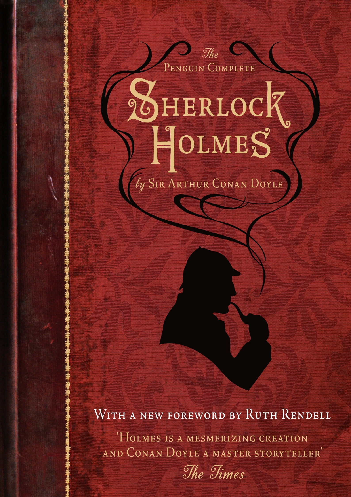

Cultura en Londres
Dentro de la ciudad de Westminster está el distrito del entretenimiento del West End, que tiene su centro en Leicester Square, el lugar en que se celebran los estrenos cinematográficos en Londres, y Piccadilly Circus, reconocible por sus anuncios luminosos gigantes.235 Allí están los teatros del West End, cines, bares, clubes y restaurantes, además del distrito de Chinatown en el área del Soho. Justo al este se halla Covent Garden, una zona de tiendas de ropa. La ciudad es el hogar del célebre compositor teatral Andrew Lloyd Webber, cuyos musicales han dominado en los teatros del West End en las últimas décadas del siglo XX.236 En Londres están el Ballet Real, el English National Ballet, la Royal Opera y la English National Opera, que exhiben sus espectáculos en la Royal Opera House, el London Coliseum, el Teatro de Sadler's Wells y el Royal Albert Hall.237
La Upper Street, una calle de una milla de longitud en el distrito de Islington que se extiende hacia el norte desde The Angel, es la calle con más bares y restaurantes del Reino Unido.238 La Oxford Street concentra más tiendas que cualquier otra zona de Europa en una calle de 1,6 km de longitud y en ella se encuentran muchos grandes almacenes, entre ellos el pionero de la cadena Selfridges.239 En Knightsbridge, al suroeste, está el primero de los famosos almacenes Harrods.
En Londres trabajan diseñadores célebres como Vivienne Westwood, John Galliano, Stella McCartney, Jimmy Choo o el español Manolo Blahnik, entre muchos otro s, y la ciudad es considerada un centro internacional de la moda junto a París, Milán o Nueva York gracias a sus renombradas escuelas de arte y diseño. Los restaurantes londinenses ofrecen numerosas variedades gastronómicas fruto de la diversidad étnica de la población de la ciudad. Entre la variedad de eventos anuales caben destacar el multitudinario Desfile del Día de Año Nuevo, la exhibición de fuegos artificiales desde el London Eye, el multitudinario carnaval de Notting Hill que se celebra en las Bank holiday de agosto, la parada tradicional Lord Mayor's Show, en noviembre, la centenaria celebración del nombramiento del nuevo Lord Mayor of London, que incluye una procesión por las calles de la City, y la ceremonia Trooping the Colour en junio, un desfile militar formal realizado por regimientos de la Commonwealth y del ejército británico durante la celebración del cumpleaños oficial de la reina.
Londres es el escenario de muchas obras literarias. Los centros literarios de la ciudad han sido tradicionalmente Hampstead y, desde inicios del siglo XX, Bloomsbury. Algunos escritores estrechamente relacionados con la ciudad son el diarista Samuel Pepys, autor del interesante relato sobre el Gran Incendio de 1666, Charles Dickens, cuyo retrato literario de una neblinosa, nevada y mugrienta ciudad de calles repletas de barrenderos y carteristas ha calado hondo en la imagen que toda la gente tiene del Londres victoriano, y Virginia Woolf, recordada hoy como una de las principales figuras del modernismo literario anglosajón del siglo XX.

Los peregrinos de Los cuentos de Canterbury de Geoffrey Chaucer, de finales del siglo XIV, parten hacia Canterbury desde Londres. William Shakespeare pasó una gran parte de su vida trabajando en Londres, su contemporáneo Ben Jonson también vivió en la ciudad y su comedia El Alquimista está ambientada en la capital inglesa.242 El Diario del año de la peste, de Daniel Defoe, es una novelización de los sucesos de la epidemia de peste de 1665.242 Otras representaciones importantes de Londres en la literatura son las historias del detective Sherlock Holmes escritas por Arthur Conan Doyle.242 Algunos escritores modernos muy influidos por la ciudad son Peter Ackroyd, autor de una «biografía» de Londres, e Iain Sinclair, escritor del género de la psicogeografía. Londres también ha dejado huella en la industria del cine. En la ciudad se hallan los Estudios Ealing y en el Soho existe una importante comunidad que trabaja en los efectos especiales y la posproducción cinematográfica. La productora de cine Working Title Films tiene su sede en la capital.243 Además, Londres ha sido escenario de películas como Oliver Twist (1948), Peter Pan (1953), El quinteto de la muerte (1955), 101 Dalmatians (1961), Mary Poppins (1964) , Blow-Up (1966), The Long Good Friday (1980), Secretos y mentiras (1996), Notting Hill (1999), Match Point (2005), V for Vendetta (2005) y Sweeney Todd (2008 ). El mundo de la televisión también está muy presente con estudios como el BBC Television Centre, The Fountain Studios o The London Studios. Muchos programas de televisión se han filmado en Londres, caso de la telenovela EastEnders, emitida por la cadena BBC desde 1985.